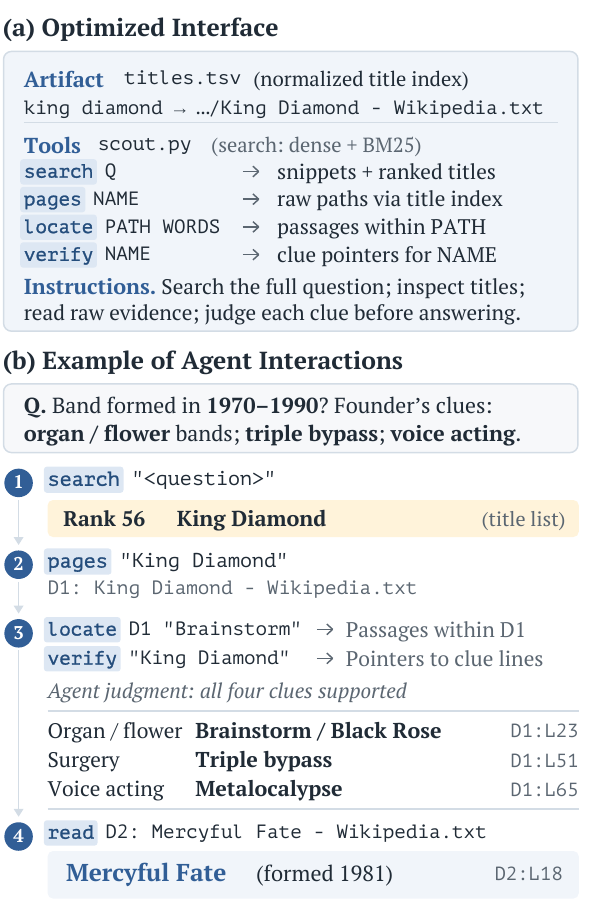
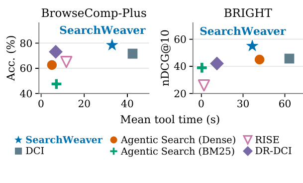

让大模型智能体在一个文档库里查资料时，它能用哪些工具、文档库预先整理成什么样、提示词里怎么教它用这些工具，合起来叫"搜索接口"。现在的接口都是人手工设计好、对所有文档库通用的，比如 DCI 直接给智能体一个终端，让它用 grep、cat 之类的命令翻原始文档。韩国大学和 KAIST 的 SearchWeaver 让另一个编码智能体（Claude Code + Claude Opus 5.5）去自动设计这个接口：它读搜索智能体的完整执行记录和每题得分，找出失败原因，然后同时改三样东西：预先生成的索引文件、可执行的搜索脚本、给搜索智能体的使用说明；改完再跑一遍、看分数，循环 10 轮。搜索智能体用 GPT-5.4-nano，在 BrowseComp-Plus 上答对率从 DCI 的 71.6% 升到 78.4%，BRIGHT 四个子集的平均 nDCG@10 从 45.7 升到 55.0；优化出的接口直接换给 Gemini 3.5 Flash-Lite 用，也比 DCI 好。
1. 问题：同一套接口不适合所有文档库
近期的智能体检索方法都在固定接口上做文章：RAG 只给检索器返回的段落；DCI 让智能体用终端命令直接翻原始文档；DR-DCI 先用向量检索把文档拉进一个工作区再翻；RISE 圈定一个受限工作区，并给文档补上模型生成的目录。论文表 1 显示，这些方法的相对好坏随文档库变化：DR-DCI 在 BrowseComp-Plus 上比 DCI 好（73.1% 对 71.6%），在 BRIGHT 上却更差（42.1 对 45.7）。作者据此认为，接口应该针对具体的文档库和具体的模型来设计。
2. 方法：让编码智能体反复改接口
2.1 接口由哪几部分组成
一个候选接口包括三部分：
- 预先生成的文件：在任何问题到来之前，对整个文档库做一次处理，比如生成"标题 → 文件路径"的索引表，供所有问题复用。
- 可执行工具：Python 脚本，可以调用提供的 BM25 和向量检索，可以把检索范围限制在某个子目录，也可以把智能体对文档的判断和检索排名合并。
- 使用说明：写给搜索智能体的指令，告诉它什么时候用哪个工具、怎么验证线索。
候选接口还可以替换搜索智能体的基础系统提示词和上下文管理策略。搜索智能体本身的模型参数不动。
2.2 优化循环
设计者是 Claude Code（Claude Opus 5.5）。每一轮它查看文档库和之前所有候选接口，写出一个新接口；新接口在优化用的题目上跑一遍，返回每题得分和完整执行记录（敲了哪些命令、工具返回了什么、最终答案）。优化题目的标准答案文档 ID 也会提供给设计者，帮助定位是"没找到"还是"找到了没认出来"。每个候选的结果不管好坏都留作后续参考。跑满 10 轮后，挑优化集平均分最高的接口，在测试题上评估，测试题从不进入设计者的反馈。

3. 实验
设置。 BrowseComp-Plus（BCP）是在固定网页库上回答多线索问题，用 GPT-4.1 判对错，30 题用于优化、800 题用于测试。BRIGHT 是需要推理的文档检索，选了生物、地球科学、经济、机器人四个子集，共 213 题优化、210 题测试，看 nDCG@10。每个文档库单独优化一个接口。提供给设计者的检索资源：BCP 上是 BM25 和 Qwen3-Embedding-4B，BRIGHT 上是 BM25 和 ReasonEmbed-Qwen3-8B 的现成排序。
3.1 主结果
这组实验检验针对文档库优化出的接口，是否在两个基准、每个子集上都比固定接口好：
| 方法 | BCP 答对率 | 生物 | 地球 | 经济 | 机器人 | BRIGHT 平均 |
|---|---|---|---|---|---|---|
| DCI | 71.6 | 61.6 | 51.5 | 31.3 | 38.2 | 45.7 |
| 智能体检索（向量） | 62.6 | 58.2 | 51.4 | 34.6 | 35.7 | 45.0 |
| 智能体检索（BM25） | 47.5 | 48.8 | 41.6 | 30.2 | 35.4 | 39.0 |
| RISE | 65.0 | 34.9 | 29.4 | 17.7 | 21.7 | 25.9 |
| DR-DCI | 73.1 | 54.4 | 43.4 | 31.7 | 39.0 | 42.1 |
| SearchWeaver | 78.4 | 74.6 | 64.6 | 38.3 | 42.4 | 55.0 |
各文档库优化出的策略并不相同：生物子集把检索范围限制在一个主题目录内；地球科学只在生成最终排名时才调用检索；经济和机器人则把智能体对文档的判断写进排序，前者通过文档排列顺序，后者通过相关性分级。
3.2 工具耗时

每题工具执行时间（不含模型推理）相比 DCI 也下降了：BCP 从 42.4 秒降到 32.9 秒，BRIGHT 从 63.2 秒降到 36.6 秒。不过从图上看，RISE 和 DR-DCI 的工具耗时更低，SearchWeaver 是用更多工具时间换来了更高的分数，作者称它在评估的方法里处于帕累托前沿。
3.3 只改提示词够不够
这组实验检验提升是否来自新生成的文件和工具，而不只是更好的提示词。对比两种变体：同样的优化循环但只允许改提示词（Prompt Optimization）；以及把 SearchWeaver 最终接口里生成的文件、工具和相应说明删掉、不再重新优化。
| 方法 | BCP | BRIGHT 平均 |
|---|---|---|
| DCI | 71.6 | 45.7 |
| 只优化提示词 | 75.6 | 52.0 |
| SearchWeaver | 78.4 | 55.0 |
| 删掉生成的文件和工具 | 72.5 | 48.7 |
只改提示词也有明显提升，在经济子集上（41.8）甚至高于 SearchWeaver（38.3）。但整体上加入文件和工具更好，删掉后回落到接近 DCI 的水平。
3.4 换模型还有效吗
这组实验检验接口能否跨模型复用。把用 GPT-5.4-nano 优化出的接口原样交给 Gemini 3.5 Flash-Lite：BCP 答对率 73.9%（DCI 为 60.9%），BRIGHT 平均 nDCG@10 为 58.8（DCI 为 50.7），BRIGHT 上每题工具时间从 23.1 秒降到 15.5 秒。不重新优化也有效，说明优化出来的东西有相当一部分属于文档库本身，而不只是针对某个模型的技巧。
4. 局限
实验只在固定不变的文档库上做。文档增删后，预先生成的索引和依赖它的工具要不要更新、能不能增量更新，作者明确说没有研究。BCP 只用 30 道题做优化，接口是否对这 30 题有过拟合，正文没有分析。每轮优化都要让设计者（Claude Opus 5.5）读完整执行记录、再让搜索智能体把优化集跑一遍，这部分成本论文没有报告。
5. 实践意义
对搭建企业内部知识库问答智能体的团队，这篇给了一个可操作的流程：拿一小批带标准答案的问题，让编码智能体看着执行记录去生成索引文件和检索脚本，而不是只调提示词。消融里只改提示词也能把 BCP 答对率从 71.6% 升到 75.6%，所以资源有限时，可以先从成本低的提示词优化做起。如果文档库更新频繁，需要自己设计索引的维护方式。